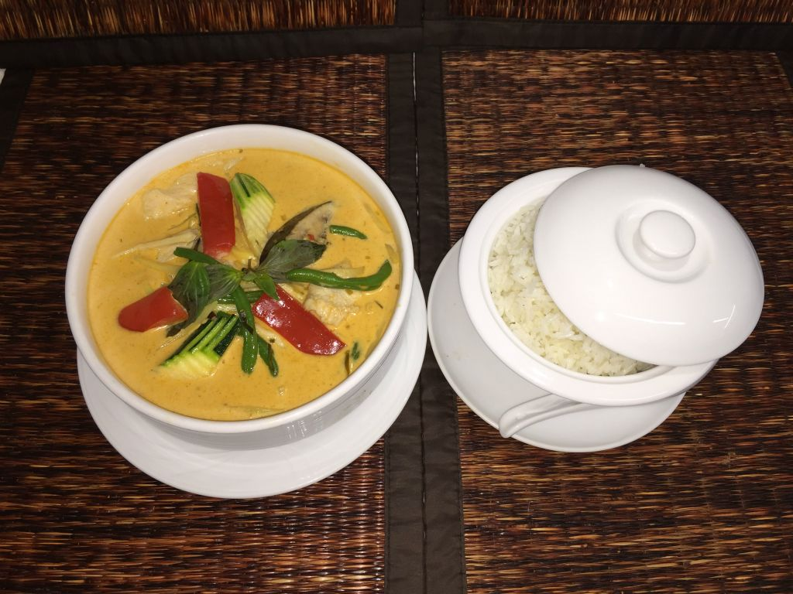

Die vollständige Speisekarte
Alle 218 Spezialitäten unserer originalen Karte – von frisch zubereiteten Vorspeisen über knusprige Ente und feurige Wok-Klassiker bis hin zu Cocktails und Weinen.
Mittagskarte · Lunch Specials
Mittags-Menü-Tipp: Wählen Sie zwischen Glasnudelsuppe (V.1), Frühlingsrollen (V.4) oder gemischtem Salat (V.6) plus Tagesgericht für 15,00 €.
V.1 Glasnudelsuppe mit Hähnchenbrust
5.50 €Klare Glasnudelsuppe mit Hähnchenbrustfilet und frischem Gemüse
V.2 Tom Yam Gai Suppe
🌶️ Scharf 5.50 €Thai-Hühnersuppe mit Champignons, Koriander und frischem Zitronengras
V.3 Tom Kha Gai Suppe
6.00 €Kokosmilchsuppe mit Hähnchenbrust und Champignons
V.4 Hausgemachte Frühlingsrollen (3 Stk.)
🌱 Vegetarisch 5.00 €Knusprige Frühlingsrollen gefüllt mit Glasnudeln und Gemüse
V.5 Hähnchenspieße Satay (4 Stk.)
6.00 €Zarte Hähnchenspießchen mit hausgemachter Erdnusssauce
V.6 Gemischter Mittagssalat
🌱 Vegetarisch 6.00 €Knackig-frischer Salat mit feinem Haus-Dressing
M.1 Gebratener Reis mit Gemüse & Hähnchenbrust
11.50 €Wok-Reis mit Hähnchenfilet, Ei und knackigem Marktgemüse
M.2 Gebratene Eiernudeln mit Gemüse & Hähnchenbrust
11.50 €Wok-Eiernudeln mit zarter Hähnchenbrust und frischem Gemüse
M.3 Gebratene Reisbandnudeln mit Hähnchenbrust
12.00 €Breite Reisbandnudeln aus dem Wok mit Hähnchenfilet und Gemüsestreifen
M.4 Buntes Gemüse in rotem Thai-Curry
🌶️ Scharf 12.00 €Knackiges Marktgemüse in samtigem rotem Kokoscurry, serviert mit Duftreis
M.5 Buntes Gemüse gebraten mit Tofu & Glasnudeln
🌱 Vegetarisch 12.00 €Feines Wokgemüse mit Bio-Tofu und Glasnudeln in milder Sauce
M.6 Hähnchenbrust in rotem Curry & Kokosmilch
🌶️ Scharf 12.50 €Hähnchenfilet in cremigem rotem Kokoscurry mit Gemüse und Duftreis
M.7 Knuspriges Huhn mit Erdnusssauce
★ Empfehlung 12.50 €Kross gebackenes Huhn auf buntem Marktgemüse mit aromatischer Erdnusssauce
M.8 Gebratene Hähnchenbrust mit Cashewkernen
12.50 €Hähnchenfilet im Wok geschwenkt mit buntem Gemüse und gerösteten Cashewnüssen
M.9 Gebratenes Rindfleisch mit Chili & Zwiebeln
🌶️ Scharf 12.50 €Zartes Rindfleisch aus dem Wok mit Zwiebeln, Champignons, Chili und Paprika
M.10 Knusprige Ente auf buntem Gemüse
★ Empfehlung 14.00 €Kross gebackene Ente auf frischem Wok-Gemüse mit Duftreis
M.11 Knusprige Ente mit Thai-Basilikum & Chili
🌶️ Scharf 14.00 €Krosse Ente mit feurigem Thai-Basilikum, Paprika, Babymais und grünen Bohnen
M.12 Hähnchenbrust mit Sesam auf buntem Salat
13.00 €Gebratene Hähnchenbrust mit geröstetem Sesam, Minz-Limetten-Dressing und Reis
M.13 Rindfleisch oder knusprige Ente auf Thai-Salat
14.00 €Auf buntem Salat mit frischem Thai-Basilikum, feiner Limettensauce und Duftreis
M.14 Hähnchenspieße mit Erdnusssauce & Salat
10.00 €Gegrillte Saté-Spieße serviert mit herzhafter Erdnusssauce, Salat und Reis
Vorspeisen · Appetizers
01 Po Pia (3 Stk.)
🌱 Vegetarisch 5.00 €Knusprige Thai-Frühlingsröllchen mit Gemüse, Glasnudeln und süß-saurer Chilisauce
02 Wan Tan gebacken (6 Stk.)
6.00 €Goldbraun gebackene Teigtaschen gefüllt mit gewürztem Hühnerfleisch
03 Saté Gai (4 Stk.)
★ Empfehlung 6.50 €Zarte Hähnchenspießchen mit cremiger hausgemachter Erdnusssauce
04 Cho Cho (4 Stk.)
7.00 €Zarte Rindfleischspießchen mariniert, serviert mit Erdnusssauce
05 Thung Thong (5 Stk.)
6.90 €Goldene Glücksbeutelchen aus Reisteig gefüllt mit gehackten Garnelen und Gemüse
06 Gum Haom Pha (5 Stk.)
6.90 €Garnelen nach Thai-Art gewürzt im Teigmantel mit süß-saurer Dip-Sauce
07 Mai Tai Platte
★ Empfehlung 12.50 €Große gemischte Vorspeisenplatte mit Saté, Wan Tan, Frühlingsrollen und Dips
08 Pak Chau Pang Thood
🌱 Vegetarisch 8.50 €Frisches knackiges Marktgemüse frittiert nach thailändischer Tempura-Art
09 Cha Gio (3 Stk.)
6.50 €Traditionelle vietnamesische Frühlingsrollen mit Schweinefleisch, Morcheln und Glasnudeln
10 Suon Heo Nuong (5 Stk.)
9.50 €Zart gegrillte Schweinerippchen glasiert mit feinem Honig und Kräutern
11 Banh Tom Chien (3 Stk.)
7.00 €Gebackener Süßkartoffelteig mit ganzen Garnelen, frischem Salat und Minze
12 Goi Cuon (2 Stk.)
★ Empfehlung 7.50 €Frische Sommerrollen in Reispapier mit Garnelen, Reisnudeln, Salat und Kräutern
Suppen · Soups
13 Tom Yam Gung
🌶️ Scharf 7.50 €Feurige Garnelensuppe mit Champignons, Koriander, Zitronengras und Thai-Ingwer (Galgant)
14 Tom Yam Gai
🌶️ Scharf 6.50 €Thai-Hühnersuppe mit Champignons, Koriander, frischem Zitronengras und Galgant
15 Tom Kha Gai
★ Empfehlung 7.00 €Aromatische Kokosmilchsuppe mit zarter Hähnchenbrust, Champignons und Galgant
16 Gaeng Chud Wunsen
6.50 €Milde und wohltuende Glasnudelsuppe mit zartem Hühnerfleisch und frischem Gemüse
17 Giow Naam
6.50 €Traditionelle Wantansuppe mit hausgemachten Hühnerfleischtaschen und Gemüse
18 Canh Chua Tom
🌶️ Scharf 7.50 €Südvietnamesische süß-säuerliche Suppe mit Garnelen, Ananas, Tomaten und Kräutern
19 Canh Chua Ga
🌶️ Scharf 6.50 €Südvietnamesische süß-säuerliche Suppe mit Hühnerfleisch und Marktgemüse
Salate · Fresh Salads
20 Yam Nua
🌶️ Scharf 12.00 €Pikanter thailändischer Rindfleischsalat mit frischem Gemüse und Chili-Limettensaft-Dressing
21 Yam Wun Sen
🌶️ Scharf 12.50 €Aromatischer Glasnudelsalat mit Hähnchen, Garnelen, Morcheln, Zwiebeln und Kräutern
22 Yam Ruammit Talee
★ Empfehlung 14.00 €Exotischer Meeresfrüchtesalat mit Garnelen, Tintenfisch, Gemüse und frischem Zitronengras
23 Lap Gai
🌶️ Scharf 11.00 €Traditioneller Thai-Salat aus gehacktem Hähnchenfilet mit Minze, Koriander, Chili und Limette
24 Salat Tron
🌱 Vegetarisch 8.00 €Großer bunter gemischter Salat mit vietnamesischem Kräuter-Dressing
25 Bo Tai Chanh
★ Empfehlung 12.00 €Vietnamesischer Rindfleischsalat mit Zwiebeln, gerösteten Erdnüssen, Limette und frischer Minze
26 Goi Thom Muc
11.50 €Tintenfischsalat mit frischer Ananas, zarten Lotusstängeln und Kräutern
27 Goi Ngo Sen Tom Thit
13.00 €Traditioneller Lotusstängelsalat mit Garnelen, Schweinefleisch und Erdnüssen
Geflügel & Hähnchen · Gai / Ga
30 Gaeng Daeng Gai (Rotes Curry)
★ Empfehlung 15.80 €Hähnchenfilet in feinem rotem Thai-Curry mit Marktgemüse, Bambus und Kokosmilch
31 Gaeng Kiew Wan Gai (Grünes Curry)
🌶️ Scharf 15.80 €Hähnchenfilet in pikantem grünem Kräuter-Curry mit Gemüse und Kokosmilch
32 Gai Pad Kratiam Prik Thai
15.80 €Gebratenes Hähnchenfilet mit schwarzem Pfeffer, Knoblauch und Prinzessbohnen
33 Gai Pad Nahm Man Hoy
15.80 €Gebratenes Hähnchenfilet mit Brokkoli, Champignons und Paprika in feiner Austernsauce
34 Panang Gai
🌶️ Scharf 15.80 €Cremiges Panang-Curry mit Hähnchenfilet, Kaffir-Limettenblättern und Erdnüssen
35 Gai Pad Ruam Mit
15.80 €Zartes Hähnchenfilet im Wok sautiert mit buntem saisonalem Marktgemüse
36 Gai Pad Prik
🌶️ Scharf 15.80 €Gebratenes Hähnchenfilet mit scharfen roten Chilis, Zwiebeln, Champignons und Paprika
37 Gai Pad Khing
15.80 €Gebratenes Hähnchenfilet mit frischem jungen Ingwer, Morcheln, Zwiebeln und Paprika
38 Priow Waan Gai
15.80 €Gebratenes Hähnchenfilet mit Ananas und Gemüse in fruchtiger süß-saurer Sauce
39 Gai Pad Met Ma Muang
★ Empfehlung 17.80 €Hähnchenfilet mit gerösteten Cashewkernen, Frühlingszwiebeln und Marktgemüse
40 Gai Pad Krapao (Kiamau)
🌶️ Scharf 15.80 €Gehacktes Hähnchenfleisch im Wok mit feurigem Chili, Knoblauch und frischem Thai-Basilikum
41 Ga Chien Gion Sot Dau
★ Empfehlung 17.50 €Knusprig gebackenes Hähnchenbrustfilet auf Wokgemüse mit reichhaltiger Erdnusssauce
42 Ga Chien Gion Sot Cam
17.50 €Knusprig gebackenes Hähnchen mit feiner fruchtiger Orangensauce
43 Ga Chien Gion Ngu Vi Huong
17.50 €Knuspriges Hähnchen verfeinert mit der aromatischen vietnamesischen 5-Gewürze-Note
44 Ga Chien Gion Sot Xa Ot
🌶️ Scharf 17.50 €Knuspriges Hähnchen mit scharfer Zitronengrassauce und frischen Chilis
45 Ga Xao Xa Ot
🌶️ Scharf 17.50 €Gebratenes Hähnchenfilet geschwenkt mit frischem Zitronengras, Chili und Kokosmilch
46 Ga Kho Gung
★ Empfehlung 18.00 €Hähnchenschenkelfleisch schonend geschmort mit jungem Ingwer im traditionellen heißen Tontopf
Schweinefleisch · Moo / Heo
50 Gaeng Kou Moo
🌶️ Scharf 15.80 €Zartes Schweinefleisch mit rotem Thai-Curry und tropischen Früchten in Kokosmilch
51 Moo Pad Khing
15.80 €Gebratenes Schweinefleisch mit frischem Ingwer, Morcheln und buntem Paprika
52 Moo Pad Ruam Mit
15.80 €Gebratenes Schweinefleisch mit einer bunten Auswahl an frischem Marktgemüse
53 Priow Waan Moo
15.80 €Gebratenes Schweinefleisch mit Gemüse und Früchten in süß-saurer Sauce
54 Moo Pad Prik
🌶️ Scharf 15.80 €Gebratenes Schweinefleisch mit Chili, Zwiebeln, Champignons und Paprika
55 Moo Krat Nam Prik Thai
15.80 €Gebratenes Schweinefleisch mit aromatischem Pfeffer, Knoblauch und Prinzessbohnen
56 Moo Kiamau (Krapao)
🌶️ Scharf 15.80 €Gebratenes Schweinefleisch mit feurigem Chili, Knoblauch und frischem Thai-Basilikum
Rindfleisch · Nua / Bo
60 Gaeng Nua (Rotes Curry)
🌶️ Scharf 17.00 €Zartes Rindfleisch in aromatischem rotem Thai-Curry mit Gemüse und Kokosmilch
61 Gaeng Kiew Wan Nua (Grünes Curry)
🌶️ Scharf 17.00 €Rindfleisch in pikantem grünem Kräuter-Curry mit Auberginen und Kokosmilch
62 Nua Krat Nam Prik Thai
17.00 €Gebratenes Rindfleisch mit Pfeffer, Knoblauch und Prinzessbohnen
63 Gaeng Paa Nua (Dschungelcurry)
🌶️ Scharf 17.00 €Rindfleisch mit Auberginen, Babymais und Galgant-Ingwerwurzeln in feurigem Dschungelcurry
64 Nua Pad Nahm Man Hoy
17.00 €Gebratenes Rindfleisch mit Champignons, frischem Brokkoli und Paprika in Austernsauce
65 Nua Pad Satay
★ Empfehlung 17.00 €Gebratenes Rindfleisch mit Paprika und Zwiebeln in cremiger Satay-Erdnusssauce und Kokosmilch
66 Nua Pad Ruam Mit
17.00 €Zartes Rindfleisch aus dem Wok mit verschiedenem Marktgemüse in Sojasauce
67 Nua Pad Prik
🌶️ Scharf 17.00 €Gebratenes Rindfleisch mit feurigen Chilis, Zwiebeln, Champignons und Paprika
68 Nua Pad Khing
17.00 €Gebratenes Rindfleisch mit frischem Ingwer, Morcheln, Paprika und Zwiebeln
69 Nua Kiamau (Krapao)
🌶️ Scharf 17.00 €Gebratenes Rindfleisch mit Chili, Knoblauch und frischem Thai-Basilikum
Knusprige Gourmet-Ente · Ped / Vit
70 Ped Pad Khing
19.50 €Ente gebraten mit frischem Ingwer, Morcheln und Paprika im Wok
71 Gaeng Kou Ped
🌶️ Scharf 19.50 €Krosse Ente in rotem Thai-Curry mit samtiger Kokosmilch und tropischen Früchten
72 Ped Pkah Loh
19.50 €Ente in traditioneller 5-Gewürze-Sojasauce mit aromatischen Gewürzen, Morcheln und Brokkoli
73 Ped Grapau
🌶️ Scharf 19.50 €Knusprige Ente im Wok sautiert mit Chili, Knoblauch und frischem süßem Thai-Basilikum
74 Ped Mai Tai
★ Empfehlung 19.50 €Knusprige Gourmet-Ente nach Art des Hauses auf reichhaltig gebratenem Marktgemüse
75 Ped Nam Dang
19.50 €Feine knusprige Ente geschwenkt in aromatischer Rotweinsauce mit Gemüsestreifen
76 Vit Nuong Ngu Vi Huong
19.50 €Knusprige vietnamesische Ente gewürzt mit traditionellen 5 Kostbarkeiten
77 Vit Nuong Xa Ot
🌶️ Scharf 19.50 €Knusprige Ente mit aromatischer Zitronengrassauce und frischen Chilis
78 Vit Chua Ngot
19.50 €Knusprige Ente mit frischer Ananas und Gemüse in fruchtiger süß-saurer Sauce
Gemüse & Tofu · Pak / Rau / Chay
80 Pad Pak Ruam Mit
🌱 Vegetarisch 15.00 €Bunte Auswahl an frischem Marktgemüse, knackig gebraten in Soja- oder Austernsauce
81 Pad Brokkoli
🌱 Vegetarisch 15.00 €Frischer Brokkoli im Wok geschwenkt mit Knoblauch in Soja- oder feiner Austernsauce
82 Gaeng Kiew Pak
🌶️ Scharf 15.50 €Frisches Gemüse in pikantem grünem Kräuter-Curry mit Kokosmilch und Duftreis
83 Gaeng Daeng Pak
🌶️ Scharf 15.50 €Frisches Gemüse mit Kaffir-Limettenblättern in samtigem rotem Thai-Curry und Kokosmilch
84 Priow Waan Pak
🌱 Vegetarisch 15.00 €Verschiedene frische Gemüsesorten und Ananas in fruchtiger süß-saurer Sauce
85 Jad Chali
🌱 Vegetarisch 15.00 €Frisches Marktgemüse mit feinen Glasnudeln in milder Soja-Sauce geschwenkt
86 Mon Kho Chay
★ Empfehlung 16.00 €Bio-Tofu mit Gemüse langsam geschmort im traditionellen heißen Tontopf
87 Dau Hoa Lan Xao Toi
🌱 Vegetarisch 14.50 €Knackig gebratene Prinzessbohnen mit frischem Knoblauch im heißen Wok
Meeresfrüchte & Fisch · Talee / Hai San
90 Gung Pad Prik
🌶️ Scharf 21.50 €Gebratene Riesengarnelen mit Chili, Zwiebeln, Champignons und Paprika
91 Gung Priow Waan
21.50 €Gebratene Riesengarnelen mit Gemüse und Früchten in thailändischer süß-saurer Sauce
92 Gung Kuo Gaeng
🌶️ Scharf 21.50 €Riesengarnelen in samtigem rotem Thai-Curry mit tropischen Früchten in Kokosmilch
93 Gung Kiew Wan Gaeng
🌶️ Scharf 21.50 €Riesengarnelen in pikantem grünem Thai-Curry mit Thai-Auberginen und Bambus
94 Gung Kratiaw Prik Thai
★ Empfehlung 21.50 €Gebratene Riesengarnelen in Knoblauch, gemahlenem Pfeffer und Prinzessbohnen
95 Gung Pad Prik Gaeng
🌶️ Scharf 21.50 €Gebratene Garnelen mit Auberginen, Bambussprossen und Thai-Basilikum in rotem Curry
96 Plah Mük Pad Prik
🌶️ Scharf 16.00 €Gebratener Tintenfisch mit Chili, Zwiebeln, frischen Champignons und Paprika
97 Plah Mük Krat Nam Prik Thai
16.00 €Gebratener Tintenfisch mit aromatischem Pfeffer, Knoblauch und Prinzessbohnen
98 Plah Priow Waan
16.00 €Paniertes und kross gebackenes Fischfilet in süß-saurer Sauce mit Früchten und Gemüse
99 Plah Pad Khing
16.00 €Paniertes Fischfilet mit frischem Ingwer, Morcheln, Zwiebeln und süßem Paprika
100 Plah Schu Schie
🌶️ Scharf 16.00 €Paniertes Fischfilet in roter Chu-Chee Currysauce mit Kaffir-Limettenblättern und Kokosmilch
101 Gaeng Talee
★ Empfehlung 18.00 €Auswahl feiner Meeresfrüchte mit Gemüse in rotem Curry und cremiger Kokosmilch
102 Tom Yam Fondue für 2 Personen
★ Empfehlung 65.00 €Berühmtes traditionelles Thai-Feuertopf-Fondue mit Garnelen, Tintenfisch, Fischfilet, Rindfleisch, Hähnchen, Gemüse und Reisnudeln (auf Vorbestellung)
103 Tom Kho To
★ Empfehlung 21.50 €Ganze Gambas langsam geschmort im traditionellen vietnamesischen Tontopf
104 Tom Rang Muoi
🌶️ Scharf 21.50 €Ganze Gambas im Wok trocken gebraten mit Meersalz, Chili und Zwiebeln
105 Tom Rang Me
★ Empfehlung 21.50 €Ganze Gambas im Wok geschwenkt in reichhaltiger fruchtig-saurer Tamarindensauce
106 Lau Thap Cam Fondue für 2 Personen
★ Empfehlung 65.00 €Vietnamesisches Festtags-Fondue mit Garnelen, Tintenfisch, Rind, Huhn, Schwein, Gemüse und Glasnudeln (auf Vorbestellung)
Vietnamesische Grillspezialitäten
111 Bo Nuong Xa
17.50 €Zart marinierte Rindfleischstreifen vom Grill mit frischem Zitronengras
112 Bo Nuong La Lot
★ Empfehlung 18.00 €Aromatisches Rinderhackfleisch eingewickelt in wilde Betelblätter (La Lot) und gegrillt
113 Heo Nuong Xa
17.00 €Gegrilltes mariniertes Schweinefleisch mit Zitronengras und Sesam
114 Banh Dap
18.00 €Garnelen umhüllt von knusprigem Speckmantel vom Grill
115 Tom Nuong
21.50 €Ganze Gambas vom Grill mit Knoblauchmarinade und frischen Kräutern
116 Thap Cam Nuong
★ Empfehlung 21.50 €Große gemischte Grillplatte kombiniert aus Nr. 111, 112 und 114 mit frischen Kräutern
Reis- & Nudelgerichte · Noodle & Rice Specialties
117 Pad Thai
★ Empfehlung 19.00 €Gebratene Reisbandnudeln nach thailändischer Art mit Krabben, Bio-Tofu, Sojasprossen und Erdnüssen
118 Pad Bami Ped
19.50 €Gebratene Eiernudeln mit knuspriger Ente, Sojakeimen und Frühlingszwiebeln
119 Khao Pad Gai
15.80 €Gebratener Jasmin-Duftreis aus dem Wok mit Hühnerfleisch, Ei und Gemüse
120 Khao Pad Nua
17.00 €Gebratener Duftreis mit zartem Rindfleisch, Ei und Gemüsestreifen
121 Khao Pad Moo
15.80 €Gebratener Duftreis mit Schweinefleisch, Ei und Gemüse
122 Com Chien Tom
19.50 €Gebratener Reis mit knackigen Garnelen, Ei und feinem Gemüse
123 Mi Xao Tom
19.50 €Weich gebratene Eiernudeln aus dem Wok mit Garnelen und knackigem Marktgemüse
124 Mi Xao Ga
15.80 €Weich gebratene Eiernudeln mit zartem Hühnerfleisch und frischem Gemüse
125 Mi Xao Thap Cam
★ Empfehlung 19.50 €Eiernudeln knusprig gebacken oder weich gebraten mit Garnelen, Tintenfisch, Fleisch und Gemüse
126 Hu Tieu Xao Thap Cam
19.50 €Breite Reisbandnudeln gebraten mit Garnelen, Tintenfisch, Fleischsorten und Gemüse
127 Banh Canh Xao Do Bien
★ Empfehlung 19.50 €Japanische dicke Udonnudeln im Wok sautiert mit reichhaltigen Meeresfrüchten
128 Mien Xao Ga
15.80 €Gebratene Glasnudeln mit zartem Hähnchenfilet, Morcheln und Gemüse
129 Pho Bo Ha Noi
★ Empfehlung 18.00 €Traditionelle vietnamesische Reisbandnudelsuppe mit zartem Rindfleisch, Sternanis-Brühe und Kräutern
130 Pho Ga
16.00 €Vietnamesische Reisbandnudelsuppe mit aromatischer Hühnerbrühe, Hähnchenfilet und Frühlingszwiebeln
131 Hu Tieu Thap Cam
19.50 €Südvietnamesische Reisbandnudelsuppe mit Garnelen, Tintenfisch, Fischbällchen und Fleisch
132 Mien Ga
15.80 €Vietnamesische Glasnudelsuppe mit zarter Hähnchenbrust, Koriander und Frühlingszwiebeln
133 Bun Bo Nuong Cha Gio
★ Empfehlung 17.50 €Lauwarme Reisnudelschale mit gegrilltem Rindfleisch, knuspriger Frühlingsrolle, Salat, Minze und Nuoc-Cham-Sauce
134 Pho Xao Ga
15.80 €Reisbandnudeln weich gebraten mit Hühnerfleisch und Marktgemüse
135 Pho Xao Bo
17.00 €Reisbandnudeln weich gebraten mit zartem Rindfleisch und Gemüse
136 Mi Xao Bo
17.00 €Eiernudeln weich gebraten mit saftigem Rindfleisch und Gemüse
137 Com / Mi / Pho Xao Rau
🌱 Vegetarisch 15.00 €Wahlweise gebratener Reis, Eiernudeln oder Reisbandnudeln rein vegetarisch mit buntem Gemüse
Desserts & Süßspeisen
140 Gebackene Banane mit Honig
5.00 €Knusprig im Teigmantel ausgebackene Banane mit feinem Bienenhonig und Sesam
141 Gebackene Ananas mit Honig
5.00 €Gebackene Ananasscheiben verfeinert mit goldenem Honig
142 Gebackene Lychee mit Vanilleeis
6.00 €Knusprig gebackene Lychees serviert mit einer Kugel Bourbon-Vanilleeis
143 Eingelegte Lychees
5.50 €Erfrischende süße Lychees auf Crushed Ice serviert
144 Gemischtes Eis
5.50 €Dreierlei Eiskugeln nach Wahl verfeinert mit Sahne
145 Gebackenes Vanilleeis
★ Empfehlung 7.00 €Im knusprigen Erdnuss-Kokos-Mantel gebackenes Vanilleeis mit Honig
146 Flambierte Banane oder Ananas
★ Empfehlung 7.00 €Am Tisch edel flambierte Banane oder Ananas mit Grand Manier / Rum
147 Süße Banane in Kokosmilch
6.00 €Warme Bananenscheiben in duftender Kokosmilch, getoppt mit gerösteten Erdnüssen
Beilagen & Extras · Side Orders
E.1 Gekochter Duftreis / Steamed Rice
2.50 €Portion gedämpfter Jasmin-Reis
E.2 Zweite Portion Reis für Hauptgericht
2.50 €Zusätzliche Reisportion zum Hauptgang
E.3 Gekochte Reisnudeln / Boiled Rice Noodles
3.00 €Zarte gekochte Reisnudeln
E.4 Gekochte flache Reisbandnudeln
3.00 €Gedämpfte breite Bandnudeln
E.5 Gebratene Eiernudeln extra
6.00 €Gebraten mit Zwiebeln, Karotten, Sojasprossen und Ei
E.6 Gebratene Reisbandnudeln extra
6.00 €Gebraten mit Zwiebeln, Karotten, Sojasprossen und Ei
E.7 Gebratene Glasnudeln extra
6.00 €Gebraten mit Zwiebeln, Karotten, Sojasprossen und Ei
E.8 Gebratener Reis extra
6.00 €Wok-Reis mit Zwiebeln, Karotten, Sojasprossen und Ei
E.9 Gebratene Udonnudeln extra
7.00 €Gebratene japanische Udonnudeln mit Gemüse
E.10 Extra Currysauce
3.00 €Wahlweise rote, grüne oder gelbe Currysauce
E.11 Extra Sojasauce oder Austernsauce
2.50 €Hausgemachte Woksauce separat
E.12 Extra Hähnchenfleisch / Chicken Portion
3.00 €Zusätzliche Fleischportion
E.13 Extra Rindfleisch / Beef Portion
3.00 €Zusätzliche Fleischportion
E.14 Extra Cashewnüsse / Cashew Nuts
3.00 €Geröstete Cashewkerne
E.15 Extra Tofu / Organic Tofu
2.50 €Gebratener Bio-Tofu
E.16 Knuspriges Hähnchen mit Reis (Pur)
14.50 €Spezialwunsch: Knuspriges Huhn & Reis ohne Gemüse und ohne Sauce
E.17 Knusprige Ente mit Reis (Pur)
16.50 €Spezialwunsch: Knusprige Ente & Reis ohne Gemüse und ohne Sauce
E.18 Sommerrolle einzeln mit Hähnchen
6.00 €Frische Sommerrolle mit Huhn
E.19 Sommerrolle einzeln mit Tofu
6.50 €Frische Sommerrolle mit Bio-Tofu
Alkoholfreie Getränke & Heißgetränke
168 Elisabethenquelle Wasser Still / Sprudel
4.00 €Erfrischendes Mineralwasser (0,4 l)
170 Elisabethenquelle Flasche Still (0,5 l)
6.00 €Feinstes lokales Quellwasser im Glas
171 Elisabethenquelle Flasche (0,75 l)
7.50 €Große Flasche Quellwasser Still oder Medium
172 Bionade verschiedene Sorten (0,33 l)
4.50 €Bio-Limonade: Ingwer-Orange, Lychee oder Holunder
175 Malzbier (0,33 l)
4.50 €Alkoholfreier Malztrunk
176 Coca Cola / Cola Light (0,4 l)
5.00 €Koffeinhaltiges Erfrischungsgetränk
180 Fanta / Sprite (0,4 l)
5.00 €Fruchtige Erfrischungslimonade
184 Bitter Lemon / Tonic Water / Ginger Ale (0,4 l)
4.50 €Klassische Bitter-Getränke auf Eis
190 Apfelsaftschorle (0,4 l)
4.50 €Naturtrüber Apfelsaft mit Sprudelwasser
193 Orangensaft / Mangosaft / Lycheesaft (0,4 l)
4.50 €Exotische Fruchtsäfte serviert auf Eis
197 Original Thai Eistee (Cha Yen, 0,4 l)
★ Empfehlung 4.50 €Frisch aufgebrühter Thai-Tee serviert auf Crushed Ice
199 Tasse Kaffee / Espresso
3.00 € - 4.00 €Frisch gemahlener Röstkaffee aus der Siebträgermaschine
201 Cappuccino / Latte Macchiato
5.00 € - 5.30 €Mit samtigem Milchschaum
204 Kännchen Jasmintee / Lotustee / Grüner Tee
★ Empfehlung 4.50 €Traditioneller loser Tee im Kännchen serviert
Biere & asiatische Spezialitäten
207 Warsteiner Pils vom Fass (0,33 l / 0,5 l)
3.50 € / 5.00 €Frisch gezapftes Premium Pils
210 Hefeweizen / Dunkelweizen / Kristallweizen (0,5 l)
5.50 €König Ludwig Weissbier
215 Singha Thai Bier (0,33 l)
★ Empfehlung 5.00 €Original thailändisches Lagerbier, eisgekühlt
217 Saigon Vietnam Bier (0,33 l)
★ Empfehlung 5.00 €Original vietnamesisches Exportbier, eisgekühlt
232 Chinesischer Lycheewein (5 cl)
4.70 €Fruchtig-süßer Lycheewein
233 Japanischer Pflaumenwein (5 cl)
4.50 €Traditioneller Umeshu Pflaumenwein
234 Japanischer heißer Sake (5 cl)
5.00 €Erwärmter Reiswein im Kännchen
235 Mekong Thai Whisky 35% vol (4 cl)
★ Empfehlung 7.00 €Der berühmte thailändische Kult-Whisky
236 Bambusschnaps / Rosenschnaps / Kaoliang (2 cl)
5.30 €Hochprozentige asiatische Schnäpse (45% - 62% vol)
239 Mou Tai 54% vol (2 cl)
★ Empfehlung 6.00 €Der legendäre chinesische Luxus-Schnaps
240 Klebreisschnaps 29% vol (2 cl)
5.00 €Aromatischer milder vietnamesischer Klebreisgeist
Cocktails & Signature Drinks
270 Super Bleifrei (Alkoholfrei)
8.00 €Kokos, Zitronensaft, Orangensaft, Apfelsaft und alkoholfreier Blue Curaçao
271 Coconut Kiss (Alkoholfrei)
8.00 €Kokosnusscreme, Ananassaft, Orangensaft und frische Sahne
272 Fruit Punch (Alkoholfrei)
8.00 €Zitronensaft, Orangensaft, Grenadine, Maracujasaft und Ananassaft
276 Maitai Cocktail Signature
★ Empfehlung 10.00 €Der legendäre Haus-Cocktail: Rum, Orzata (Mandelsirup), Dry Orange und Limettensaft
277 Maitai für 2 Personen
★ Empfehlung 17.50 €Große Doppel-Karaffe unseres Signature MaiTai mit Rum, Früchten und Grenadine
281 Verführung
9.00 €Lycheewein, Ananassaft, Orangensaft, Erdbeersirup und frische Sahne
284 Margarita Classic
10.00 €Tequila, Triple Sec, frischer Zitronensaft und Lime Juice mit Salzrand
285 Caipirinha / Caipiroska
10.00 €Cachaça (oder Wodka), frische Limetten und brauner Rohrzucker auf Crushed Ice
288 Mojito Classic
10.00 €Weißer Rum, frische Limettenviertel, Minzzweige, Rohrzucker und Soda
294 Singapore Sling
★ Empfehlung 10.00 €Gin, Kirschlikör, Apricot Brandy, Grand Marnier, Ananas- und Limettensaft
299 Piña Colada Classic
9.00 €Weißer Rum, cremige Kokosmilch, Ananassaft und Sahne
307 Long Island Iced Tea
10.00 €Rum 73%, Tequila, Gin, Wodka, Lime Juice, Zitronensaft und Cola
309 Zombie Extreme
★ Empfehlung 10.00 €Rum 73%, Rum, Dry Orange, Zitronensaft, Orangensaft und Grenadine
Weine & Schaumweine · Wine Selection
362 Prosecco Spumante (0,1 l / 0,75 l)
5.00 € / 25.50 €Feinperlig, elegant und trocken
365 Fürst von Metternich Sekt (0,75 l)
32.00 €Klassischer Rieslingsekt, trocken
400 Chardonnay Pierre & Remy Gauthier (0,2 l)
5.90 €Burgund, Frankreich – Reintönig, leicht und trocken
401 Riesling Balthasar Ress, Rheingau (0,2 l)
5.90 €Trocken oder halbtrocken – Feingliedrig, süffig und frisch mit feiner Säure
403 Grauburgunder Wasenweiler, Baden (0,2 l)
5.90 €Kräftig und saftig mit feinen Aromen von Steinobst und Kräutern
406 Chavel Rosé Vin de Pays d'Oc (0,2 l)
5.90 €Südfrankreich – Leicht trocken, würzig und fruchtbetont
408 Merlot, Syrah & Cabernet Chavel (0,2 l)
5.90 €Südfrankreich – Gefälliger, harmonischer Rotwein
409 Cabernet Sauvignon Cono Sur, Chile (0,2 l)
5.90 €Tiefdunkel, vollmundig und intensiv fruchtig
420 Sauvignon Blanc 'Eins zu Eins' Weingut Diehl (0,75 l)
★ Empfehlung 29.00 €Pfalz – Exotische Frucht, Minze, mineralisch und unglaublich klar
428 Terre di Montelusa Riserva DOC, Brindisi (0,75 l)
★ Empfehlung 24.50 €Apulien, Italien – Sangiovese & Negroamaro, samtig-weich mit feiner Holznote
429 Château La Freynelle Bordeaux (0,75 l)
25.50 €Bordeaux, Frankreich – Merlot & Cabernet Sauvignon mit komplexen Tanninen und dunklen Beeren